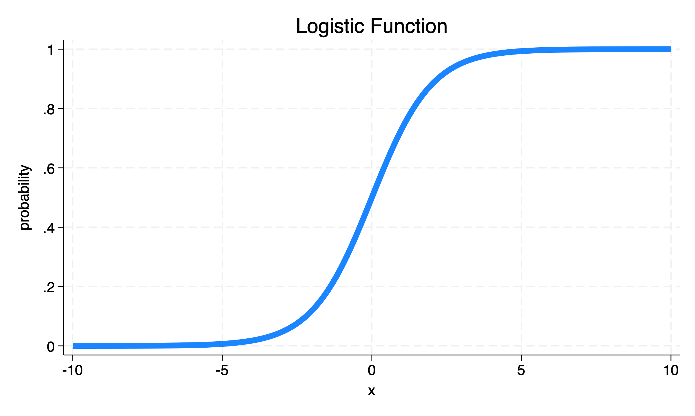
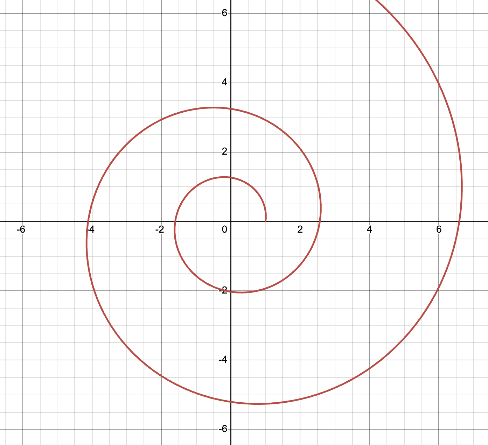
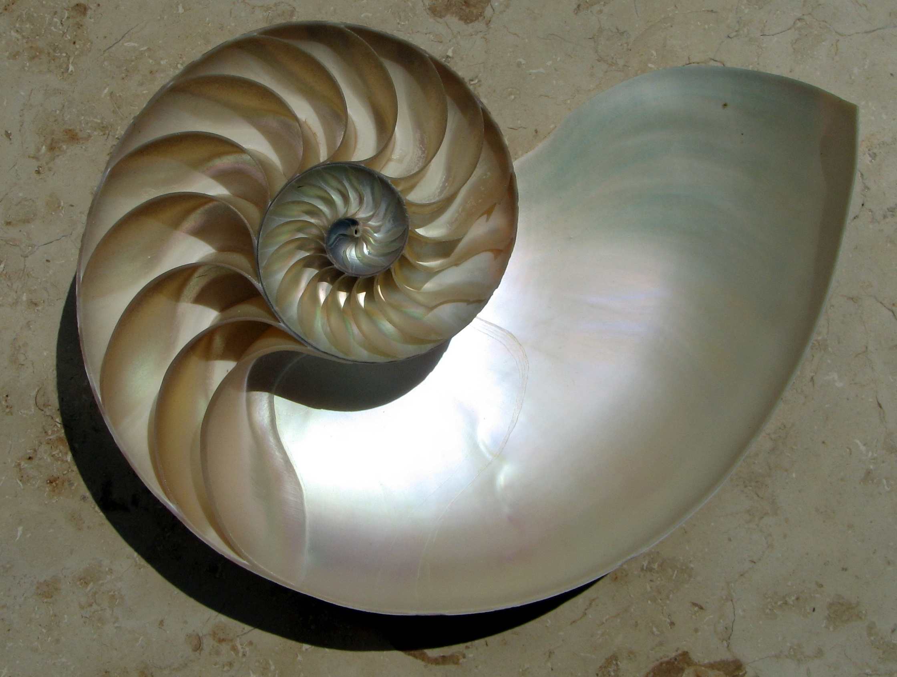
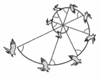

logarithms
The Exponential Function
We start with the exponential function.
The exponent tells us how many times to multiply the base by itself to get the result.
The Logarithm
We then consider the logarithm.
In words:
For example:
The logarithm answers the question: What is the power to which we have to raise the number to get the result?
The Natural Logarithm
For deep mathematical reasons, it is often useful to use logarithms with base \(e\) which is often termed the natural logarithm, written \(\ln\)
\(e\) is a kind of fundamental mathematical constant, like \(\pi\), but without the easy geometric definition that \(\pi\) has. (For any \(\bigcirc\), \(\pi = \frac{\text{circumference}}{\text{diameter}}\).)
\(e\) emerges in many contexts, including some aspects of compound growth processes 1. \(e\) is approximately equal to 2.71828….
If \[y = e^x\] then \[\ln(y) = x\]
Logistic Regression
One application of the logarithm is in thinking about logistic regression. In logistic regression, we start by thinking about the odds of our outcome:
\[\frac{p(\text{outcome})}{1-p(\text{outcome})}\]
For mathematical reasons–detailed below–we end up working with the logarithm of the odds, or the log odds:
\[\ln(\frac{p(\text{outcome})}{1-p(\text{outcome})}) = x\]
To graph or visualize these log odds, we need to solve for \(p(\text{outcome})\), the probability of the outcome:
This function is sometimes called a sigmoid, and has the interesting property of mapping the interval \(- \infty < x < \infty\) to \(0 < \text{probability} < 1\).
This is the first step in mapping a set of continuous predictors to the probability of categorical outcome.
Logarithmic Spiral
An interesting sidenote is that the logarithm forms the basis of the logarithmic spiral. The equation for a logarithmic spiral in polar coordinates is: \(r = ae^{b \theta}\), where \(\theta\) is the angle, \(r\) is the radius, and \(a\) and \(b\) are constants.
Logarithmic spirals can be found in nature in the nautilus shell, and in sunflowers and in the flight of hawks.
\[\color{purple}{y} \color{black}{=} \color{blue}{\text{base}}^{\color{red}{\text{exponent}}}\]
\(\color{blue}{2}^{\color{red}{3}} \color{black}{=} \color{purple}8\)
because
\(\color{blue}{2} \times \color{blue}{2} \times \color{blue}{2} \color{black}{=} \color{purple}{8}\)
If…
\[y = b^x\]
Then… \[\log_b(y) = x\]
If \(\text{number} = \text{base}^{\text{exponent}}\)
then
\(\log_{\text{base}}(\text{number}) = \text{exponent}\).
\(2^3 = 8\)
therefore
\(log_2 8 = 3\)
The logarithm may thus be thought of as the inverse of the exponential function.
\[p(\text{outcome}) = \frac{e^x}{1 + e^x}\]





References
Footnotes
A common definition of \(e\) is \[e = \lim_{n \to \infty} \left(1 + \frac{1}{n} \right)^n\]↩︎